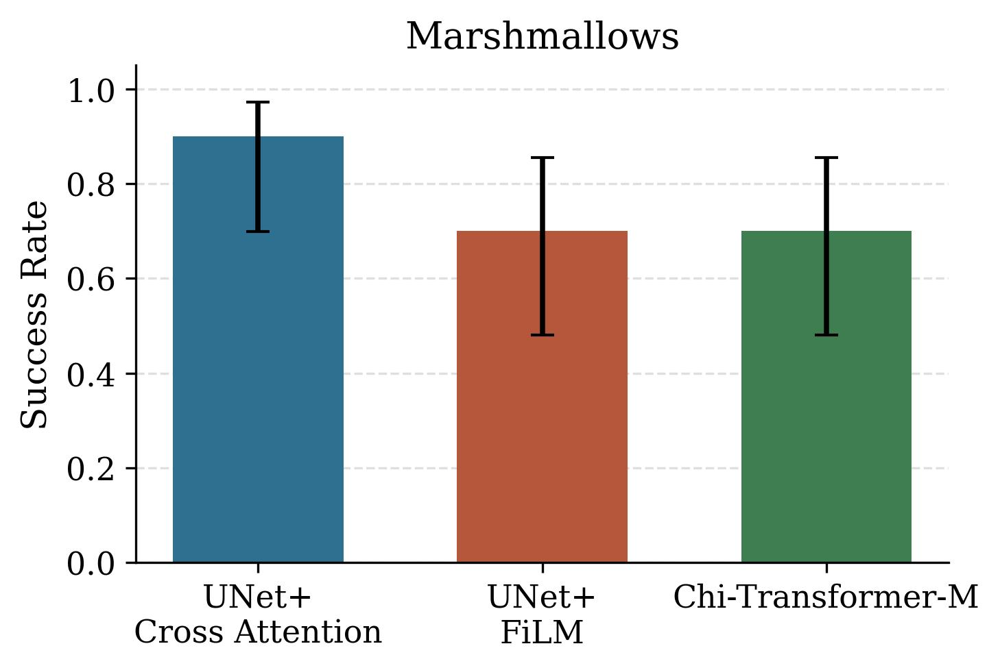
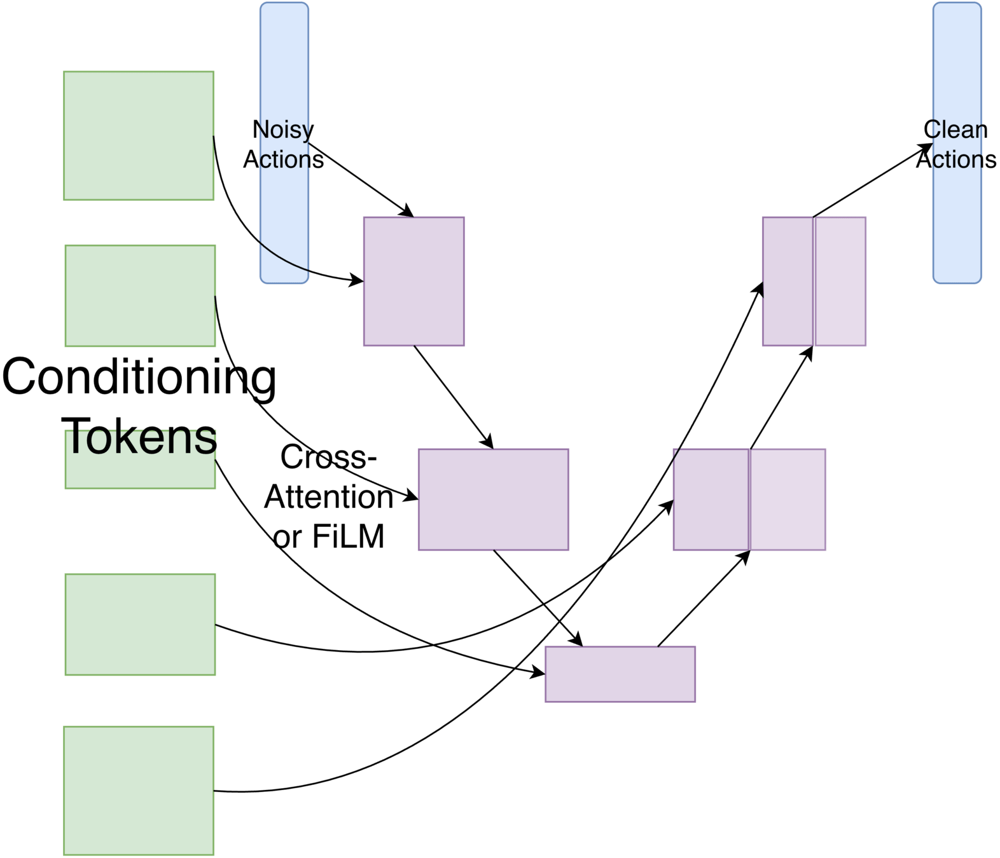
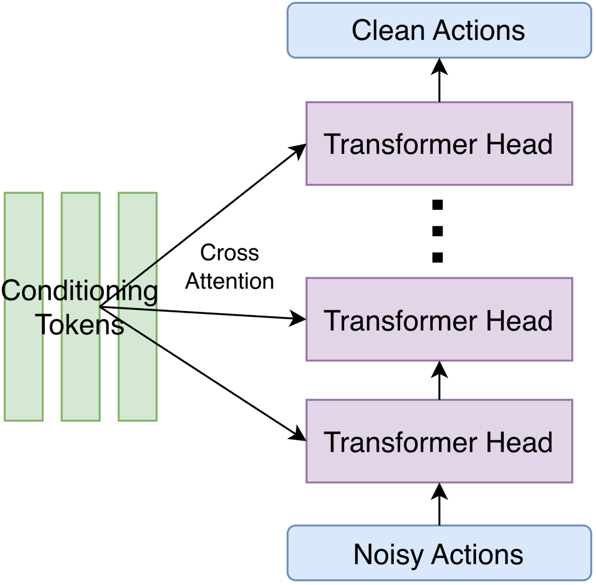
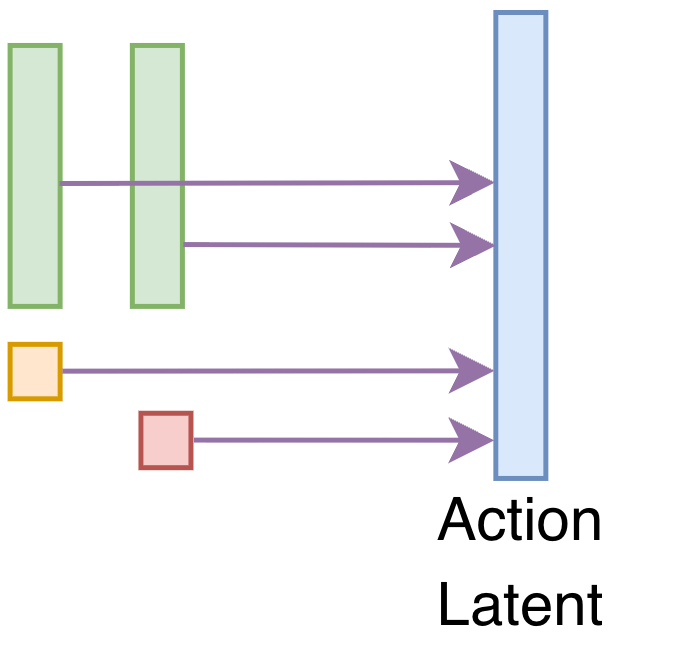
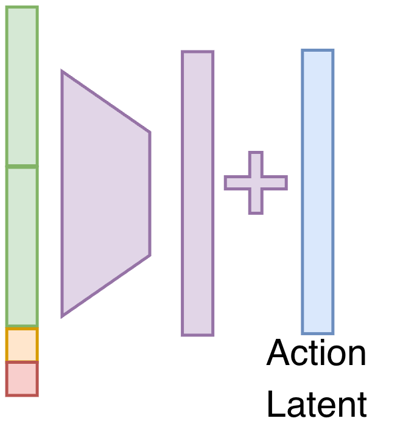
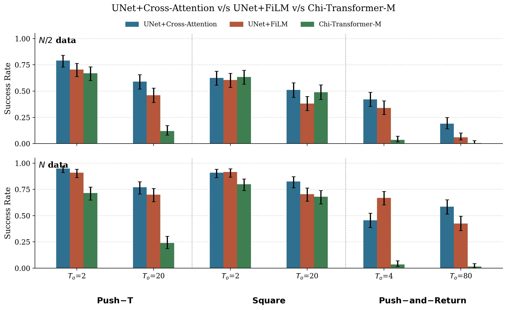
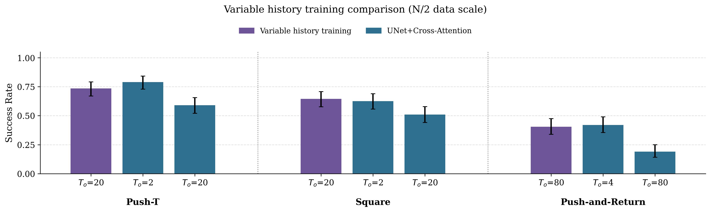

Training and Evaluating Diffusion Policieswith Long Context Lengths
Author names withheld for anonymous review
Affiliation withheld for anonymous review
Summary
We investigate context length scaling in Diffusion Policy across a spectrum of
tasks at different data scales and find that with appropriate architecture,
hyperparameters, and data scale, naïve context length scaling doesn't catastrophically
fail. We then make recommendations to train single-task long-context Diffusion Policies
in different data regimes.
Naïve scaling isn't always brittle
What happens as context length is increased from short to long?
+ other tokens (proprioception, timestep, …)
↓
PolicyDenoising backbone · UNet / DiT
↓
robot actions
We study naïve scaling along three axes
every plot sweeps data scale:N/2 · lowN · ideal2N · high
Naïve scaling works on hardware, too hardware
On a task requiring the robot to scoop marshmallows exactly two times and hit a button
to indicate completion, we are able to achieve high success rates through the UNet+Cross-Attention
architecture as well as hyper-parameter changes for other architectures. We used 100 demos for this task.

Recommendations for Training Long-Context Policies
For training single-task long-context Diffusion Policies, especially in the
limited-data regime, we make two recommendations: an architecture choice and a training algorithm.
Architecture
We compare two action denoising backbones — UNet and DiT — and for
the UNet, two conditioning methods — Cross-Attention and FiLM.
Action denoising backbone

UNet recommended
hover for conditioning methods ↓

DiT
Conditioning method (for UNet)

Cross-Attention recommended

FiLM
aIn the single-task, training-from-scratch case, UNet is the better backbone — it outperforms DiT even after favorable hyper-parameter changes.
bCross-attention conditioning especially helps in the limited-data regime.

Figure 7 — UNet+Cross-Attention vs. UNet+FiLM vs. DiT, at the N/2 and N data scales.
Variable History Training
We propose training policies over multiple context lengths, shown according to a curriculum
during training. We believe this way the model can use short-context datagrams to mitigate over-fitting while
learning to benefit from memory when useful (and ignoring it when not).
We evaluate two curricula.
observationpast actionfuture action
datagrams seen during training — one per step
increasing training step →
In the data regime where naively increasing context length performs worse than short-context
policies, we find progressive curriculum and limited past prediction perform best.

Figure 8 — Variable history training comparison in the low (N/2) data regime.
For results at other data scales, please see the paper.
Abstract
Imitation learning has enabled highly-dexterous robotic manipulation from RGB
observations. Policies trained with these methods, however, typically condition
robot actions on only a short history of observations. These policies cannot solve
tasks that require memory and can get stuck repeatedly executing the same failing
motions. In this work, we first benchmark policy performance as context length is
incrementally increased from short to long, across a spectrum of tasks with varying
local stability and memory requirements, and in multiple data regimes. To our
knowledge, this is the first study to investigate context length in imitation
learning at this level of detail. Our results challenge prior claims: naïvely scaling
context length is not as brittle as advertised in literature. With an appropriate
conditioning method and denoising backbone (UNet + Cross-Attention),
single-task policies achieve high success rates on many tasks in the usual data
regime even with naïve scaling. Next, we propose a training algorithm to jointly
train policies at multiple context lengths, further reducing the sample complexity
of long-context learning. Finally, we apply our findings to re-evaluate some
previously proposed solutions to long-context imitation learning.